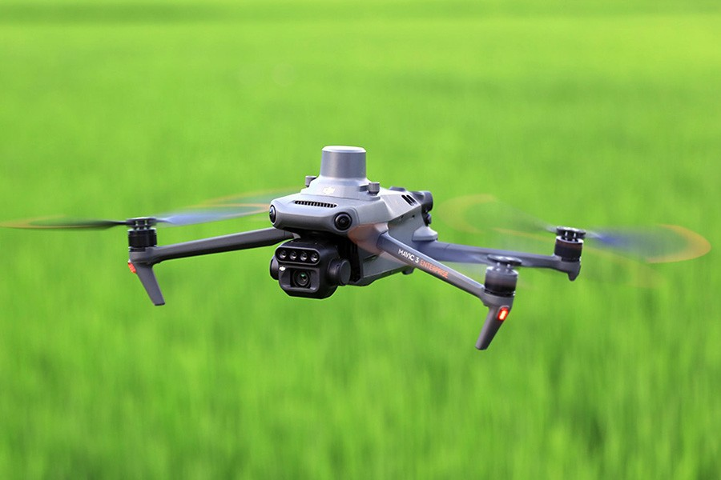

Nuestro Equipo

DJI MAVIC 3 Multiespectral
-

-

- 
Diseñado para misiones de topografía de campo y análisis de índices de vegetación agrícola Precisos.
Características
- Cámara multiespectral 4 × 5 MP. G/R/RE/NIR.
- Cámara RGB 20 MP
- CMOS 4/3, obturador mecánico
- Sistema anticolisión omnidireccional.
- Alcance de transmisión de 15 km.
- Posicionamiento RTK centimétrico.
- Sincronización temporal en microsegundos.